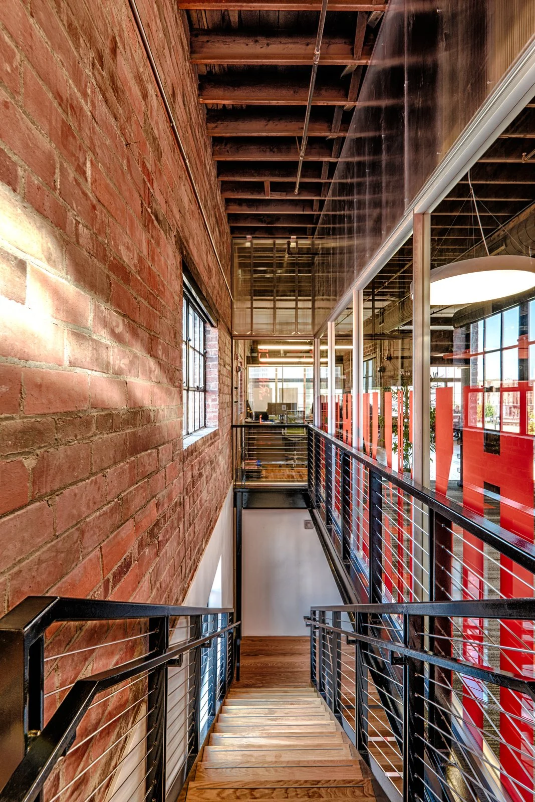
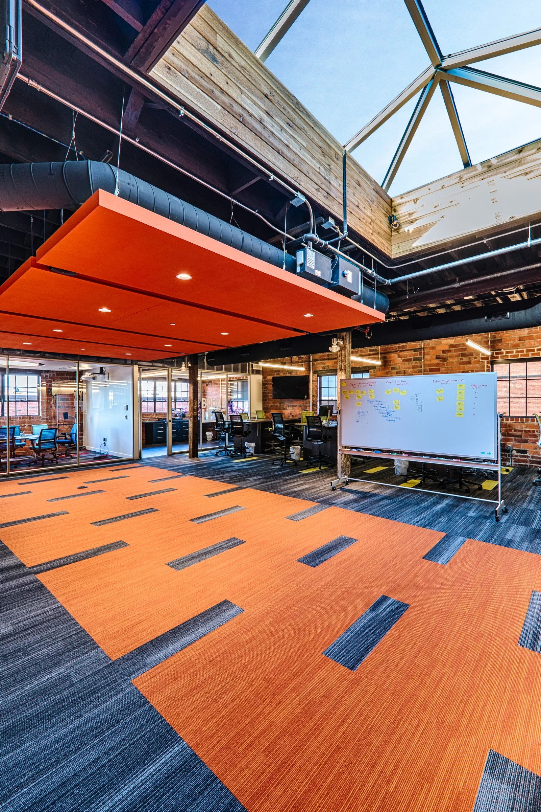
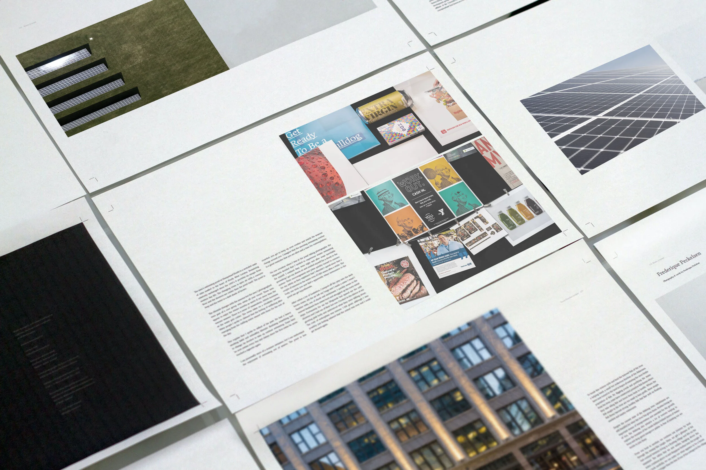

MODUS and professional services
Website, marketing, photography, and brand-adjacent support for a firm that needs clear proof across projects and recruiting.
Work and proof
The current site shows a wide mix of client work. This rebuild organizes that proof around outcomes: clearer brands, better websites, useful visuals, and systems that help companies move.
Case studies and image references were preserved in the local scrape archive for future build-out and deeper portfolio pages.
Case-study direction
The next pass can turn each client example into a tighter story: challenge, services, assets delivered, and outcome. For launch, the page highlights the strongest categories from the current portfolio.
Website, marketing, photography, and brand-adjacent support for a firm that needs clear proof across projects and recruiting.
Construction and company visuals that document progress, communicate capability, and support sales conversations.
Company profile and YouTube-oriented video work that helps a business explain who they are and what they do.
Photography portfolio
The full image archive is local now, so future pages can be expanded into richer category galleries without returning to Squarespace.



Portfolio categories
AI consulting becomes more credible when paired with a history of hands-on creative execution.
Current examples include MODUS, Blackbird Invest, and KJohnson Construction. The rebuilt site positions web work as fast, strategic, and cheaper to host on Cloudflare.
Projects include 7300 Westown Pkwy, Stark Performance Center, Big Grove Brewery and Crescent Building, Market One, The Wilkins Building, The Harkin Institute, and more.
Before-and-after and recurring site documentation help large projects tell a transformation story over time.
Proposal development, business cards, custom print media, social content, templates, analytics, and post backlog creation become part of a broader creative system.